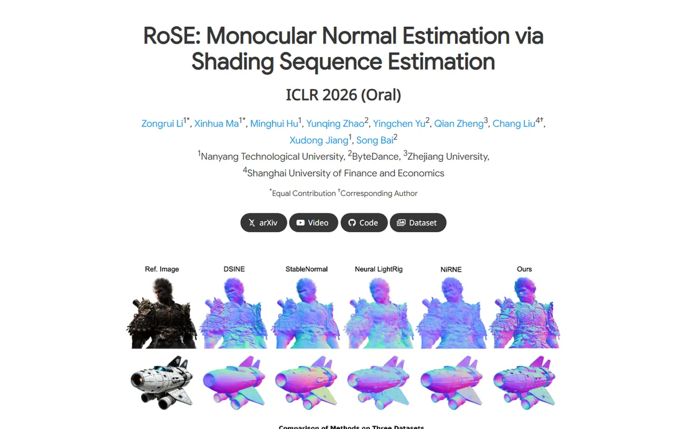

Monocular Normal Estimation via Shading Sequence Estimation
The Nerfies house style wearing iridescent normal maps: grey type, blue names, and lavender-cyan surfaces doing all the talking.

Checked against the rendered page. The Google Fonts link loads only the 400 weights, so the 600 headings render as synthesized bold.
Why it is here
The teaser combines a qualitative comparison strip with a summary bar chart. A clean abstract, a callout illustration and a before/after slider gallery in cards follow. Neat and consistent, though close to the standard template.
Overview
Color Palette
Typography
Google Sans
Monocular Normal Estimation via Shading Sequence Estimation
Abstract · Method · Results · BibTeX — 0123456789
Noto Sans
Monocular Normal Estimation via Shading Sequence Estimation
Abstract · Method · Results · BibTeX — 0123456789
Spacing & Shape
Page Modules
Guidelines
More like this

Scaling Text-Rich Image Understanding via Code-Guided Synthetic Multimodal Data Generation
A university press catalogue: small-caps serif title, a colour wheel of specimens and an earthy bar chart.

DICE-BENCH: Evaluating the Tool-Use Capabilities of Large Language Models in Multi-Round, Multi-Party Dialogues
A Nerfies page with a game-box cover: a charcoal dice banner stamps the identity, then pastel brand-tinted pills and a grey carousel strip carry you into a quiet two-column method read.

TUNA: Comprehensive Fine-grained Temporal Understanding Evaluation on Dense Dynamic Videos
A benchmark that leads with its scoreboard: a fish-logo small-caps wordmark, a gradient venue line, then a full-width grey-headed leaderboard with zebra rows and blue model links.

Archon: A Unified Multimodal Model for Holistic Digital Human Generation
A midnight observatory: an opalescent logotype, teal signal lights and numbered mission cards glowing on deep space.

Pano3DComposer: Feed-Forward Compositional 3D Scene Generation from Single Panoramic Image
A tidy lab notebook with blue margin tabs, opened on a split panorama you can drag apart.

UniPixie: Unified and Probabilistic 3D Physics Learning via Flow Matching
A product launch page for a physics engine: frosted pill nav, heavy sans headlines and a sky-to-red gradient running through every accent.